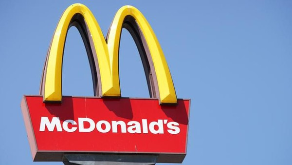

McDonald's
McDonald adalah perusahaan makanan fast food nomor 1 di dunia yang menyediakan menu andalannya yaitu burger. McDonald merupakan tempat istimewa dari tahun ke tahun bahkan saking istimewanya, McDonald menyimpan banyak kenangan berharga bagi orang-orang di seluruh dunia. Penyedia makanan cepat saji ini juga berkontribusi besar terhadap dunia contohnya seperti menjadi donatur, penyedia lapangan pekerjaan, ataupun penyedia sarana relawan.
Sejarah McDonald's
McDonald's didirikan pada tahun 1940 oleh Richard dan Maurice McDonald di San Bernardino, California. Kedua bersaudara ini memperkenalkan "Speedee Service System" pada tahun 1948, yang menetapkan prinsip-prinsip restoran cepat saji modern. Ray Kroc, seorang pengusaha, bergabung dengan perusahaan sebagai agen waralaba pada tahun 1954 dan membeli jaringan tersebut dari saudara-saudara McDonald, mendorong ekspansi globalnya.

Teknis Perdagangan Internasional McDonald's
McDonald's menerapkan model waralaba yang memungkinkan ekspansi cepat dengan investasi modal yang minimal. Perusahaan ini fokus pada adaptasi lokal, memastikan bahwa menu dan operasinya selaras dengan selera dan preferensi budaya regional. McDonald's mengandalkan bahan baku lokal dan global, menjaga standar kualitas dan keamanan yang tinggi.
Dampak McDonald's terhadap Perdagangan Internasional
McDonald's memiliki dampak signifikan terhadap perdagangan internasional dengan menetapkan tolok ukur dalam manajemen rantai pasokan dan strategi pemasaran global. Kehadirannya di banyak negara telah mendorong pertumbuhan ekonomi, menciptakan peluang kerja, dan memperkenalkan praktik bisnis baru. Namun, McDonald's juga menghadapi kritik karena berkontribusi terhadap masalah kesehatan dan homogenisasi budaya.